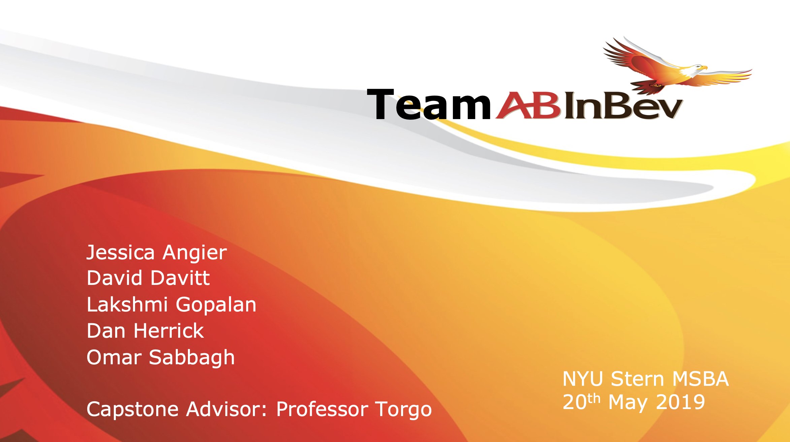

Selected Projects
Beyond the typical day-to-day analytics/business intelligence workflows, there have been a number of interesting business questions and problems that I have solved for over the past few years:

Unifying Business Intelligence
Business Question: Can we develop a unified data product to streamline business and content intelligence, enabling non-technical users to access data-driven insights for growth and innovation?
Approach: I collaborated with data and engineering teams to develop a platform that synthesized global data from VMG, unveiling both macro and micro cultural and content trends. This blend of 'logic' (tech) and 'magic' (people) bolstered our foresight, shaping our production choices, partnerships, and growth strategies.
There were multiple phases to this initiative:
- Discovery + Diligence (2 months): Conducted interviews with internal stakeholders, understanding their needs and aspirations. This phase set the groundwork, ensuring our solution was in line with organizational needs.
- Collect + Connect (1 month): Cataloged and integrated key platforms, ensuring a comprehensive and interconnected data landscape.
- Design + Test (2 months): Developed Python-based integrations and initiated data visualizations. This phase was crucial to ensure the integrity of the data and presenting data/insights in an accessible manner.
- MVP + Enhance (3 months): Rolled out the product's MVP, integrating user feedback, refining the UI, and setting the stage for subsequent versions.
Unearthing the Hidden Influencers
Business Question: Beyond conventional KPIs like views and average time spent, what other metrics can provide insights into the success of videos?
Approach: For years, I've been fascinated with network theory. I had been toying with ways to apply network theory on top of data within our data warehouse, but the business need didn't fully develop--until recently.
Drawing inspiration from link analysis, particularly Google's PageRank, I envisioned videos in an ecosystem (be it onsite or on platforms like YouTube) functioning akin to nodes in a social network. Namely, when a viewer enjoys a video, they're inclined to explore related content, bolstering the "connections" of that particular video within the ecosystem.
My thought process revolved around: Could a video, even if it performs moderately based on standard metrics, significantly influence its immediate video network, or even the broader ecosystem? Can we spotlight these pivotal "gatekeeper" videos and quantify their ripple effect?
To address this, I developed a methodology to:
- Identify videos that act as major junctions within the ecosystem, boasting the most direct links to other content.
- Recognize videos that, while perhaps not directly linked to many others, exerted a wide-ranging influence across the entire video network.
By doing so, we not only refined video success metrics but also unearthed the unsung heroes driving viewer engagement.

Companion Brands: A New Paradigm in Brand Ranking
Business Question: How can we develop a brand ranking system, similar to Forbes and Interbrand, that not only drives corporate publicity and sales leads but also strengthens our existing client relationships?
Approach: As young adults are in the prime of their social and professional lives, they seek trustworthy companions to guide them and make sense of the world around them. Brands, in this context, aren't mere service or product providers; they're beacons of purpose resonating with their core audience. We set out to understand what makes a brand a reliable "companion" by identifying the critical codes of conduct (such as respect, support, and empowerment) that endear brands to consumers. Through this, we crafted an innovative index to help brands gauge and hone their standing as a consumer's companion.
Methodology:
- Exploration: Combed through prior primary research, evaluated existing secondary studies, and accrued quantitative and qualitative feedback from young consumers and internal stakeholders to delineate the attributes and brands to be assessed.
- Investigation: Launched an online survey that captured insights from 2,759 Gen Z and Millennial respondents in the U.S. The study encompassed 200 brands spanning 14 diverse business categories.
- Analysis: Devised factors that grouped attributes based on survey outcomes, giving birth to the defining "codes of conduct." A machine learning classification model was employed to measure the predictability of robust brand relationships linked to each code. Subsequently, every one of the 200 brands underwent scoring via this model, unveiling their standing in their respective categories and spotlighting their strengths and areas for improvement in regards to the codes of conduct.

Archetypal Analysis for Brand Differentiation
Business Question: How does our brand positioning and content offerings compare to competitors, and where do market saturation and unmet needs lie?
Approach: To answer this age-old buiness question, I aimed to craft a narrative appealing to both our strategic planners and our creative leaders.
- Understanding Target Audiences: I first identified the target audience for each publisher, deciphering their core messages. The aim? To discern the aspirations and demands of these audiences and the messages brands sought to deliver.
- Mapping the Competitive Landscape: I dug into digital footprints, analyzed social media reach, audience demographics, and brand self-descriptions. This helped spotlight both the overpopulated content zones and those neglected niches across sites and social platforms.
- Jungian Archetypal Analysis: Tapping into the universal symbols of Jungian theory, like the Hero or the Sage, I harnessed AI to mine career portals and press pages for each publisher. The goal was to decode the underlying archetypes that brands projected in their public personas.
- Crafting Distinctive Content: Armed with these archetypal insights, I segmented brands and their content, juxtaposing them against their target audiences and offerings. The final output was a comprehensive map highlighting areas of content oversaturation and those ripe with opportunity, paving the way for unique and tailored brand and content strategies.

Decoding Franchise Formulas for Longevity
Business Question: In our pursuit to expand our thriving franchises, how can we infuse both strategic and creative depth to safeguard their enduring appeal?
Approach: Every successful product or franchise possesses an intangible magic. Yet, a deeper look reveals a number of factors contributing to its success. Uncovering its success requires a delicate balance between art and science.
Using both quantifiable performance metrics and rich, qualitative consumer insights I crafted bespoke 'Franchise Formulas.' These formulas aimed to demystify the essence of each franchise, spotlighting their strengths, vulnerabilities, and what sets them apart in the vast marketplace and within our diverse portfolio.
The core mission of these formulas? To empower our development, marketing, and strategy teams with a holistic grasp of our franchises’ magic. Delving deep, the formulas answer pivotal questions:
- Who are the franchise's ardent fans?
- Which creative elements attract viewers initially and what elements keeps them hooked?
- Are there creative elements that fall flat?
- When new ideas come through the pipeline, how do we discern whether they align with an existing franchise or are better tailored for another?
